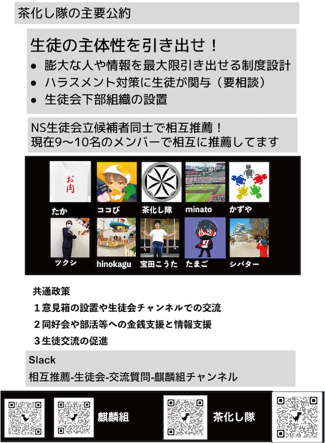

麒麟組
団体紹介
現在10名で共通政策の実現を前提に、相互推薦を行なっているグループです。
共通政策は以下の三つ。個人政策もあります。是非見てください。


必ず返信の帰ってくる目安箱を作ります！
イベントを募集し、実際に実行します！
皆さんのやりたいことに対して、生徒会が資金を出します！
生徒会出費に関しての調査を行える予算審査委員会を生徒会外に設置します
生徒会長になり、上記4つの公約を達成できなかった場合、坊主にして謝罪します。

各種情報をサイトやbotなどの機能を使い集約する
同好会、及び同好会「相当」のチャンネルへの生徒会の情報支援
ハラスメント対策に主体的に生徒が関われる機関を設置
キャンパス生徒会などの下部組織の設置。